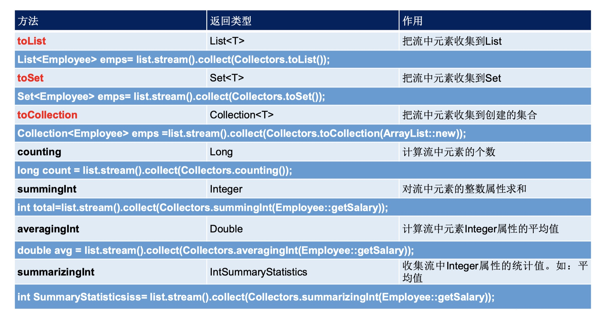
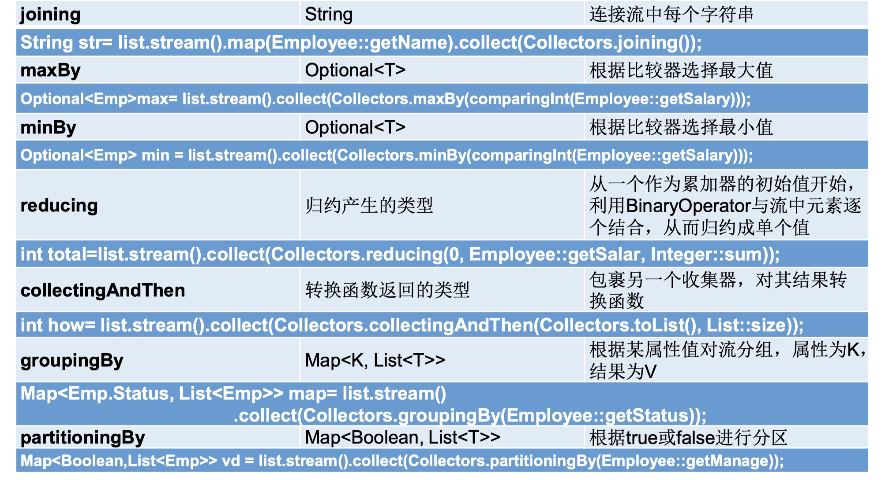

Stream API 说明
Java 8 中有两大最为重要的改变。第一个是 Lambda 表达式；另一个则是 Stream API。
Stream API（java.util.stream）把整正真的函数式编程风格引入到 Java 中。这是目前为止对 Java 类库最好的补充，因为 Stream API 可以极大提供 Java 程序员的生成力，让程序员写出高效率、干净、简洁的代码。
Stream 是 Java 8 中处理集合的关键抽象概念，它可以指定你希望对集合进行的操作，可以执行非常复杂的查询、过滤和映射数据等操作。使用 Stream API 对集合数据进行操作，就类似于使用 SQL 执行的数据库查询。也可以使用 Stream API 来并行操作。简言之， Stream API 提供了一种高效且易于使用的处理数据方式。
为什么要使用 Stream API
实际开发中，项目中大多数数据都来自于 Mysql、Oracle 等。但现在数据源可以更多了，有 MongDB、Redis 等，而这些 NoSQL 的数据就需要 Java 层面去处理。
Stream 和 Collection 集合的区别：Collection 是一种静态的内存数据结构，而 Stream 是有关计算的。前者是主要面向内存，存储在内存中，后者主要是面向 CPU ，通过 CPU 实现计算。
什么是 Stream
是数据渠道，用于操作数据源（集合、数组等）所生成的元素序列。“集合讲的是数据，Stream 讲的是计算！”
注意：
- Stream 自己不会存储元素。
- Stream 不会改变源对象。相反，他们会返会一个持有结果的新 Stream。
- Stream 操作是延迟执行，这意味着他们会等到需要结果的时候才执行。
Stream 的操作三个步骤
- 创建 Stream：一个数据源（如：集合、数组），获取一个流。
- 中间操作：一个中间操作链，对数据源的数据进行处理。
- 终止操作（终端操作）：一旦执行终止操作，就执行中间操作链，并产生结果。之后，不会再被使用。
创建 Stream
通过集合
Java 8 中的 Collection 接口被拓展，提供了两个获取流的方法：
default Stream<E> stream()：返回一个顺序流。default Stream<E> parallelstream()：返回一个并行流。
通过数组
Java 8 中的 Arrays 的静态方法 stream() 可以获取数组流：
static <T> Stream<T> stream(T[] array)：返回一个流。
重载形式，能够处理对应基本类型的数组：
public static IntStream stream(int[] array)public static LongStream stream(long[] array)public static DoubleStream stream(double[] array)
通过 Stream 的 of()
可以调用 Stream 类静态方法 of()，通过显示值创建一个流（它可以接受任意数量的参数）:
public static<T> Stream<T> of(T... values)：返回一个流。
创建无限流
可以使用静态方法 Stream.iterate() 和 Stream.generate(), 创建无限流：
迭代
public static<T> Stream<T> iterate(final T seed, final UnaryOperator<T> f)生成
public static<T> Stream<T> generate(Supplier<T> s)
示例：1
2
3
4
5
6
7
8
9
10
11
12
13
14
15
16
17
18
19
20
21
22
23
24
25
26
27
28
29
30
31
32
33
34
35
36
37
38
39
40
41
42
43
44
45
46
47
48
49
50
51
52
53
54
55
56
57
58
59
60
61
62
63
64
65
66
67
68
69
70
71
72
73
74
75
76
77
78
79public class EmployeeData {
public static List<Employee> getEmployees(){
List<Employee> list = new ArrayList<>();
list.add(new Employee(1001,"马化腾",34,6000.38));
list.add(new Employee(1002,"马云",12,9876.12));
list.add(new Employee(1003,"刘强东",33,3000.82));
list.add(new Employee(1004,"雷军",26,7657.37));
list.add(new Employee(1005,"李彦宏",65,5555.32));
list.add(new Employee(1006,"比尔盖茨",42,9500.43));
list.add(new Employee(1007,"任正非",26,4333.32));
list.add(new Employee(1008,"扎克伯格",35,2500.32));
return list;
}
}
class Employee{
private Integer id;
private String name;
private Integer age;
private Double salary;
public Employee(Integer id, String name, Integer age, Double salary) {
this.id = id;
this.name = name;
this.age = age;
this.salary = salary;
}
public Employee(Integer id, String name) {
this.id = id;
this.name = name;
}
public Integer getId() {
return id;
}
public void setId(Integer id) {
this.id = id;
}
public String getName() {
return name;
}
public void setName(String name) {
this.name = name;
}
public Integer getAge() {
return age;
}
public void setAge(Integer age) {
this.age = age;
}
public Double getSalary() {
return salary;
}
public void setSalary(Double salary) {
this.salary = salary;
}
public String toString() {
return "Employee{" +
"id=" + id +
", name='" + name + '\'' +
", age=" + age +
", salary=" + salary +
'}';
}
}
1 | /** |
Stream 的中间操作
多个中间操作可以连接起来形成一个流水线，除非流水线上触发终止操作，否则中间操作不会执行任何的处理！而在终止操作时一次性全部处理，称为“惰性求值”。
筛选与切片
filter(Predicate p)：接收Lambda，从流中排除某些元素。distinct()：筛选，通过流所生成元素的 hashCode() 和 equals() 去除重复元素。limit(long maxSize)：截断流，使其元素不超过给定数量。skip(long n)：跳过元素，返回一个扔掉了前 n 个元素的流；若流中元素不足 n 个，则返回一个空流；与limit(n)互补。
映射
map(Function f)：接收一个函数作为参数，该函数会被应用到每个元素上，并将其映射成一个新的元素。mapToDouble(ToDoubleFunction f)：接收一个函数作为参数，该函数会被应用到每个元素上，产生一个新的 DoubleStream。mapToInt(ToIntFunction f)：接收一个函数作为参数，该函数会被应用到每个元素上，产生一个新的 IntStream。mapToLong(ToLongFunction f)：接收一个函数作为参数，该函数会被应用到每个元素上，产生一个新的 LongStream。flatMap(Function f)：接收一个函数作为参数，将流中的每个值都换成另一个流，然后把所有流连接成一个流。
排序
sorted()：产生一个新流，其中按自然顺序排序。sorted(Comparator com)：产生一个新流，其中按比较器顺序排序。
示例：1
2
3
4
5
6
7
8
9
10
11
12
13
14
15
16
17
18
19
20
21
22
23
24
25
26
27
28
29
30
31
32
33
34
35
36
37
38
39
40
41
42
43
44
45
46
47
48
49
50
51
52
53
54
55
56
57
58
59
60
61
62
63
64
65
66
67
68
69
70
71
72
73
74
75
76
77
78
79
80
81
82
83
84
85
86
87/**
* :
* : com.example.jdk_18.stream_api
* : StreamAPI_Operation
* : 测试 Stream 的中间操作
* : Mr.Vincent
* : 2020/2/29 22:12
* : 1.0.0
*/
public class StreamAPI_Operation {
//筛选与切片
public void m1() {
List<Employee> list = EmployeeData.getEmployees();
//filter(Predicate p)：接收 Lambda ，从流中排除某些元素。
Stream<Employee> stream = list.stream();
stream.filter(employee -> employee.getSalary() > 7000).forEach(System.out::println);
System.out.println();
//limit(long maxSize)：截断流，使其元素不超过给定数量
list.stream().limit(3).forEach(System.out::println);
System.out.println();
//skip(long n)：跳过元素，返回一个扔掉了前 n 个元素的流；若流中元素不足 n 个，则返回一个空流；与 limit(n) 互补。
list.stream().skip(3).forEach(System.out::println);
System.out.println();
//distinct()：筛选，通过流所生成元素的 hashCode() 和 equals() 去除重复元素。
list.add(new Employee(1010, "刘强东", 40, 8000.00));
list.add(new Employee(1010, "刘强东", 41, 8000.00));
list.add(new Employee(1010, "刘强东", 40, 8000.00));
list.add(new Employee(1010, "刘强东", 40, 8000.00));
list.add(new Employee(1010, "刘强东", 40, 8000.00));
System.out.println(list);
list.stream().distinct().forEach(System.out::println);
}
//映射
public void m2() {
//map(Function f)：接收一个函数作为参数，该函数会被应用到每个元 素上，并将其映射成一个新的元素。
List<String> list = Arrays.asList("aa", "bb", "cc");
list.stream().map(s -> s.toUpperCase()).forEach(System.out::println);
//获取员工姓名长度大于3的员工姓名
List<Employee> employees = EmployeeData.getEmployees();
employees.stream().map(Employee::getName).filter(name -> name.length() > 3).forEach(System.out::println);
//flatMap(Function f)：接收一个函数作为参数，将流中的每个值都换成另一个流，然后把所有流连接成一个流。
Stream<Character> characterStream = list.stream().flatMap(StreamAPI_Operation::fromStringStream);
characterStream.forEach(System.out::println);
}
public static Stream<Character> fromStringStream(String str) {
ArrayList<Character> characters = new ArrayList<>();
for (char c : str.toCharArray()) {
characters.add(c);
}
return characters.stream();
}
//排序
public void m3() {
//sorted()：产生一个新流，其中按自然顺序排序。
List<Integer> list = Arrays.asList(12, 34, 53, 221, 45, -98, 7, 98);
list.stream().sorted().forEach(System.out::println);
System.out.println();
//sorted(Comparator com)：产生一个新流，其中按比较器顺序排序。
List<Employee> employees = EmployeeData.getEmployees();
employees.stream().sorted((e1, e2) -> {
int ageVal = Integer.compare(e1.getAge(), e2.getAge());
if (ageVal != 0) {
return ageVal;
} else {
return Double.compare(e1.getSalary(), e2.getSalary());
}
}).forEach(System.out::println);
}
}
Stream 的终止操作
终端操作会从流的流水线生成结果。其结果可以是任何不是流的值，例 如：List、Integer，甚至是 void。流进行了终止操作后，不能再次使用。
匹配与查找
allMatch(Predicate p)：检查是否匹配所有元素。anyMatch(Predicate p)：检查是否至少匹配一个元素。noneMatch(Predicate p)：检查是否没有匹配所有元素。findFirst()：返回第一个元素。findAny()：返回当前流中的任意元素。count()：返回流中元素总数。max(Comparator c)：返回流中最大值。min(Comparator c)：返回流中最小值。forEach(Consumer c)：内部迭代(使用 Collection 接口需要用户去做迭代，称为外部迭代。相反，Stream API 使用内部迭代——它帮你把迭代做了)。
归约
reduce(T iden, BinaryOperator b)：可以将流中元素反复结合起来，得到一个值。返回 T。reduce(BinaryOperator b)：可以将流中元素反复结合起来，得到一个值。返回 Optional。
收集
collect(Collector c)：将流转换为其他形式。接收一个 Collector 接口的实现，用于给Stream中元素做汇总的方法。
Collector 接口中方法的实现决定了如何对流执行收集的操作(如收集到 List、Set、 Map)。另外， Collectors 实用类提供了很多静态方法，可以方便地创建常见收集器实例， 具体方法与实例如下表：


示例：1
2
3
4
5
6
7
8
9
10
11
12
13
14
15
16
17
18
19
20
21
22
23
24
25
26
27
28
29
30
31
32
33
34
35
36
37
38
39
40
41
42
43
44
45
46
47
48
49
50
51
52
53
54
55
56
57
58
59
60
61
62
63
64
65
66
67
68
69
70
71
72
73
74
75
76
77
78
79
80
81
82
83
84
85
86
87
88
89
90
91
92
93
94
95
96
97
98
99
100
101
102
103
104
105
106
107
108/**
* :
* : com.example.jdk_18.stream_api
* : StreamAPI_Termination
* : 测试 Stream 的终止操作
* : Mr.Vincent
* : 2020/3/10 01:20
* : 1.0.0
*/
public class StreamAPI_Termination {
//匹配与查找
public void m1() {
List<Employee> employees = EmployeeData.getEmployees();
//allMatch(Predicate p)：检查是否匹配所有元素。
//练习：是否所有员工的年龄都是大于18
boolean allMatch = employees.stream().allMatch(employee -> employee.getAge() > 18);
System.out.println(allMatch);
System.out.println();
//anyMatch(Predicate p)：检查是否至少匹配一个元素。
//练习：是否存员工的工资大于10000
boolean anyMatch = employees.stream().anyMatch(employee -> employee.getSalary() > 10000);
System.out.println(anyMatch);
System.out.println();
//noneMatch(Predicate p)：检查是否没有匹配所有元素。
//练习：是否存员工姓"雷"
boolean noneMatch = employees.stream().noneMatch(employee -> employee.getName().startsWith("雷"));
System.out.println(noneMatch);
System.out.println();
//findFirst()：返回第一个元素。
Optional<Employee> first = employees.stream().findFirst();
System.out.println(first);
System.out.println();
//findAny()：返回当前流中的任意元素。
Optional<Employee> any = employees.stream().findAny();
System.out.println(any);
}
public void m2() {
List<Employee> employees = EmployeeData.getEmployees();
//count()：返回流中元素总数。
long count = employees.stream().filter(employee -> employee.getSalary() > 5000).count();
System.out.println(count);
System.out.println();
//max(Comparator c)：返回流中最大值。
//练习：返回最高的工资
Stream<Double> doubleStream = employees.stream().map(employee -> employee.getSalary());
Optional<Double> max = doubleStream.max(Double::compare);
System.out.println(max);
System.out.println();
//min(Comparator c)：返回流中最小值。
//练习：返回最低工资的员工
Optional<Employee> min = employees.stream().min((e1, e2) -> Double.compare(e1.getSalary(), e2.getSalary()));
System.out.println(min);
System.out.println();
//forEach(Consumer c)：内部迭代(使用 Collection 接口需要用户去做迭代，称为外部迭代。相反，Stream API 使用内部迭代——它帮你把迭代做了)。
employees.stream().forEach(System.out::println);
//使用 Collection 接口需要用户去做迭代，称为外部迭代。
employees.forEach(System.out::println);
}
//归约（reduce）
public void m3() {
//reduce(T iden, BinaryOperator b)：可以将流中元素反复结合起来，得到一个值。返回 T。
//练习：计算1-10的自然数的和
List<Integer> integers = Arrays.asList(1, 2, 3, 4, 5, 6, 7, 8, 9, 10);
Integer reduceSumInteger = integers.stream().reduce(0, Integer::sum);
System.out.println(reduceSumInteger);
System.out.println();
//reduce(BinaryOperator b)：可以将流中元素反复结合起来，得到一个值。返回 Optional<T>。
//l练习：计算公司所有原有员工工资的总和
List<Employee> employees = EmployeeData.getEmployees();
Optional<Double> reduceSumDouble = employees.stream().map(Employee::getSalary).reduce(Double::sum);
System.out.println(reduceSumDouble);
Optional<Double> aDouble = employees.stream().map(Employee::getSalary).reduce((d1, d2) -> d1 + d2);
System.out.println(aDouble);
}
//收集
public void m4() {
List<Employee> employees = EmployeeData.getEmployees();
//collect(Collector c)：将流转换为其他形式。接收一个 Collector 接口的实现，用于给Stream中元素做汇总的方法。
//练习：查找工资大于6000的员工，返回一个 List 或者一个 Set
List<Employee> collectList = employees.stream().filter(employee -> employee.getSalary() > 6000).collect(Collectors.toList());
collectList.forEach(System.out::println);
System.out.println();
Set<Employee> collectSet = employees.stream().filter(employee -> employee.getSalary() > 6000).collect(Collectors.toSet());
collectSet.forEach(System.out::println);
}
}
案例源码：https://github.com/V-Vincen/jdk_18
If you like this blog or find it useful for you, you are welcome to comment on it. You are also welcome to share this blog, so that more people can participate in it. If the images used in the blog infringe your copyright, please contact the author to delete them. Thank you !